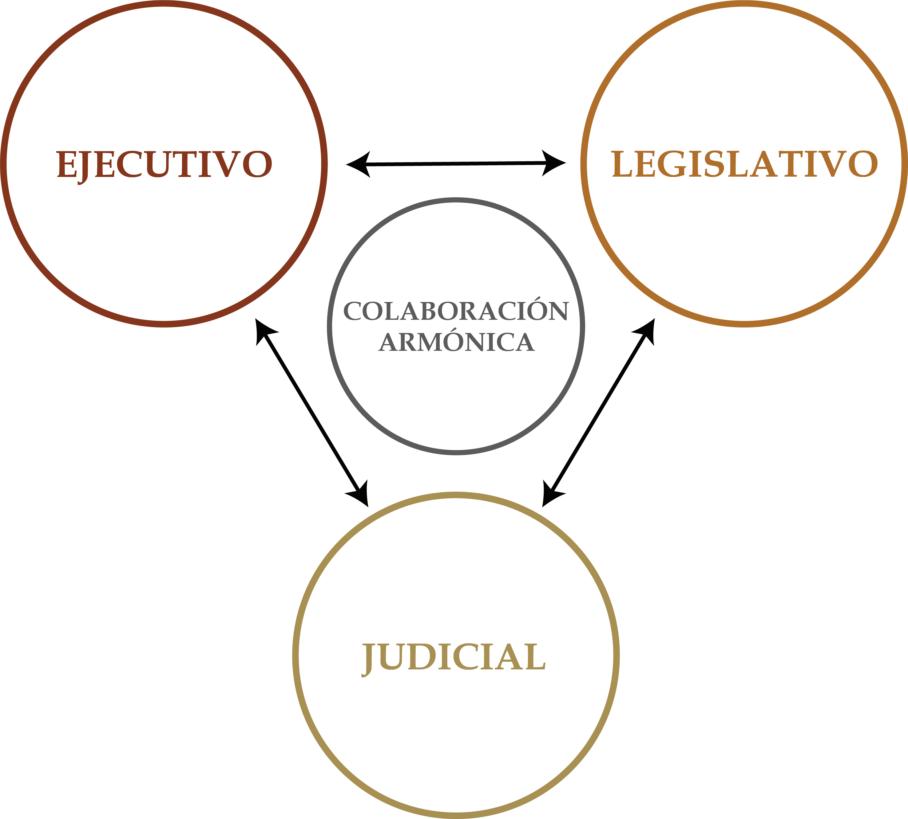

Unidad 1.2 El Estado, una organización especialmente compleja
Después de estudiar la relación entre los componentes del Estado —la comunidad, el territorio, la construcción del bienestar y el marco institucional—, se puede observar que todos ellos están estrechamente vinculados con el concepto de poder, en especial con el poder público.
Esta Sección tiene como propósito analizar y comprender el poder como eje central de los principales acontecimientos históricos y políticos de Occidente; aborda los siguientes temas: el poder en la Antigua Grecia y Roma; la doctrina sobre el origen divino del poder; el poder en la Edad Media y los inicios de la Edad Moderna; el poder público y los sistemas de gobierno; la Ilustración y los precursores de la división de las ramas del poder público; el modelo liberal burgués; la Declaración de Independencia norteamericana; la caída de la monarquía absoluta en Francia; y la crisis de la monarquía absoluta en España.
2.1. El poder y la Polis en la antigua Grecia
Todos sabemos, así no siempre estemos dispuestos a reconocerlo, que buena parte en nuestro mundo occidental deriva de la cultura griega. Por lo menos en lo que tiene que ver con las ideas y las creencias, y sobre todo con las palabras que se usan para darles presencia entre nosotros a esas ideas y a esas creencias 1.
La democracia ateniense no surgió de un momento a otro. Fue el resultado de un largo proceso de transformaciones políticas y sociales que se desarrolló principalmente desde el siglo VII a. C. Durante los siglos XI, X y IX a. C., en Atenas predominó la monarquía, es decir, el gobierno de una sola persona. En esa época, las poblaciones eran pequeñas y estaban organizadas alrededor de grupos familiares.
Con el tiempo, los nobles adquirieron mayor poder porque eran propietarios de las tierras y contaban con los recursos necesarios para participar en el ejército y en la política. Así, durante los siglos VIII y VII a. C., la monarquía fue reemplazada progresivamente por la aristocracia, un sistema en el que el poder estaba concentrado en un grupo reducido de nobles.
El crecimiento de la población y la falta de recursos suficientes también impulsaron la fundación de nuevos asentamientos. Este proceso de colonización favoreció posteriormente el desarrollo de la economía. Al mismo tiempo, cambiaron las formas de organización militar. Además de los tradicionales carros de guerra, comenzó a adquirir importancia la infantería, integrada por hombres que podían proporcionar su propio armamento. Esto permitió que nuevos grupos con cierta capacidad económica aumentaran su importancia dentro de la sociedad.
Posteriormente aparecieron las tiranías, que inicialmente produjeron ciertos periodos de prosperidad. Aunque muchos tiranos terminaron siendo derrotados, algunos favorecieron más al pueblo que a la aristocracia y permitieron la aparición de nuevos espacios de participación política.
Estas transformaciones contribuyeron al surgimiento de la democracia en el siglo V a. C., sistema del cual Atenas se convirtió en su principal exponente y no solo llegó a la verdadera democracia, sino se produjo uno de los momentos de mayor florecimiento cultural.
La civilización griega se desarrolló inicialmente en la cuenca del mar Egeo, sus primeros antecedentes se remontan al Neolítico y al tercer milenio a. C., especialmente en la isla de Creta. Allí surgió la civilización minoica, considerada una de las primeras civilizaciones occidentales, que alcanzó su mayor esplendor durante el reinado del rey Minos. Su decadencia comenzó con la invasión de los aqueos 2, hacia el año 1400 a. C.
Los aqueos se establecieron en Grecia y desarrollaron la civilización micénica, cuya principal ciudad fue Micenas. Durante varios siglos dominaron gran parte del territorio y alcanzaron su apogeo en la época de la guerra de Troya. En ese período, Grecia estaba formada por numerosas ciudades y comunidades independientes. La organización social se estructuraba alrededor del geni, un grupo de familias que reconocían un antepasado común y vivían alrededor del castillo de un “señor”. Ante amenazas externas, los jefes de familia se reunían en asambleas para tomar decisiones junto con el “señor”. Con el tiempo, estas reuniones dieron origen a consejos en los que participaban los principales representantes de cada geni.
Posteriormente, el “señor” pasó a ser considerado rey y asumió funciones judiciales, religiosas y militares. Sin embargo, su autoridad estaba limitada por el Consejo. En esta etapa todavía no había surgido plenamente la Polis, que posteriormente se convertiría en una de las principales formas de organización política de la antigua Grecia.
Hacia el año 1100 a. C., los dorios o espartanos, provenientes de Europa central, invadieron Grecia. Introdujeron el uso del hierro y sometieron por la fuerza a los aqueos, estableciendo una de sus primeras fortalezas en Corinto. El Ática fue la única región que logró resistir la invasión doria. Esta fuerte identificación con cada ciudad también favoreció el individualismo y dificultó la unidad política de Grecia. Por esta razón, los griegos no lograron formar un Estado unificado y establecer ni un imperio comparable con los de Egipto, Babilonia o Roma.
Este periodo de invasiones se extendió hasta aproximadamente el año 800 a. C. Durante esos siglos de continuas mezclas entre pueblos se fue formando el espíritu de la Polis, que unía a los griegos alrededor de su propia ciudad. Para Platón el hombre requiere de los demás hombres, los busca por necesidad; el individuo no puede abastecerse por sí mismo, porque el hombre es social y sólo puede realizarse dentro de una sociedad, por lo tanto, nace la _Polis3 .
Para algunos historiadores, la Polis era simplemente una ciudad, para otros, era mucho más: una comunidad y una unidad política. Ser ciudadano de esta significaba participar directamente en los asuntos públicos y en la creación de las normas necesarias para mantener la convivencia. Así mismo, estaba formada por hombres libres que intervenían personalmente en las decisiones de su comunidad.
La Polis se basaba principalmente en la libertad, la cooperación y la participación directa. Los ciudadanos acudían personalmente a la asamblea, ya que no existía la representación política como la conocemos actualmente. Sin embargo, no toda la población podía participar políticamente. Solo una minoría llamada polites tenía la condición de ciudadano. En Atenas, por ejemplo los ciudadanos representaban menos del 15 % de la población, las mujeres, los niños, los esclavos y los extranjeros residentes estaban excluidos de la participación en las decisiones de la Polis.
La asamblea de ciudadanos era el centro de la vida política, allí se tomaban decisiones, se elegían funcionarios y generales y se conformaban los tribunales. Se preferían los órganos colectivos porque se consideraba que ayudaban a reducir el riesgo de corrupción. Como los propios ciudadanos participaban en la toma de decisiones, debían respetar las normas que ellos mismos habían establecido; por esta razón, la libertad y el respeto por la ley fueron dos de los principales pilares de la Polis.
En conclusión, la Polis puede entenderse como una comunidad de hombres libres que se gobernaban a sí mismos mediante la participación directa de sus ciudadanos. Sus derechos y obligaciones eran establecidos por ellos mismos, y la libertad se garantizaba mediante el cumplimiento de las leyes acordadas por la comunidad.
Sin embargo, la división social en Atenas se profundizó con las leyes de Dracón, que establecieron castigos muy severos, incluso la pena de muerte para delitos menores. Además, el poder quedó principalmente en manos del Areópago 4, una asamblea integrada por los eupátridas. Esta situación cambió con las reformas del arconte Solón (640-558 a. C.), quien buscó disminuir las desigualdades sociales. Entre sus principales medidas estuvieron la eliminación de la esclavitud por deudas, la reducción de estas y la división de los ciudadanos en cuatro clases según su situación económica; y también estableció que los esclavos debían recibir un trato humanitario.
Solón mantuvo el Areópago, formado por antiguos arcontes encargados de vigilar el cumplimiento de las leyes y la moral pública y privada. Además, creó un Senado y amplió la participación política de los ciudadanos. Cuando se le preguntó en qué consistía el orden, Solón respondió: “En el hecho de que el pueblo obedezca a sus gobernantes y estos obedezcan a las leyes” 5.
El periodo comprendido entre 457 y 429 a. C. se conoció como el “Siglo de Oro” de Pericles cuando el partido democrático comandado por el propio Pericles derrotó a la aristocracia comandada por Cimón.
Macedonia era un reino ubicado al norte de Grecia que con la llegada de Filipo II al poder, en 359 a. C., se convirtió progresivamente en una importante potencia militar. Más adelante, bajo el reinado de su hijo Alejandro Magno, Macedonia conquistó Grecia, Egipto y gran parte de Asia. De esta manera se formó un gran imperio que estuvo fuertemente influenciado por la cultura griega y que buscó difundirla por los territorios conquistados.
Alejandro fundó nuevas ciudades inspiradas en las polis griegas. Algunas llegaron a convertirse en importantes centros culturales, como Alejandría, reconocida por su avanzada cultura, su biblioteca y su museo.
Tras la muerte de Alejandro en 323 a. C., surgieron conflictos por su sucesión. Después de varios años de enfrentamientos, el imperio terminó dividido entre sus principales generales, quienes se establecieron como monarcas en distintos territorios. De esta división surgieron las llamadas monarquías helenísticas 6, en las que continuó la influencia de la cultura griega.
2.2. El poder y la propiedad en la antigua Roma
Roma comenzó como una confederación de tribus asentadas en las siete colinas. En sus primeros tiempos tuvo una organización patriarcal, con un rey acompañado por un consejo de jefes de las familias fundadoras y una asamblea formada por hombres libres patricios. Con su crecimiento y las luchas por dominar Italia, Roma necesitó una mayor centralización política. Aumentó el poder del gobernante y del Senado, y la antigua ciudad se transformó progresivamente en una verdadera ciudad-Estado.
Posteriormente, la monarquía fue reemplazada por la república, en la que la aristocracia mantuvo una importante influencia política. Más adelante, durante el siglo I a. C., comenzó la formación del imperio, caracterizado por la concentración del poder en una sola persona. Roma pasó así de ser una ciudad-Estado a convertirse en una ciudad-imperio de carácter cosmopolita.
La expansión romana no fue producto de un plan previamente diseñado, sino de diferentes circunstancias políticas y militares. A medida que Roma conquistaba nuevos territorios, también tuvo que transformar sus instituciones para adaptarse a los cambios. Roma también se benefició del desarrollo cultural alcanzado anteriormente por Grecia y por los etruscos. En lugar de crear desde cero muchos elementos culturales y artísticos, incorporó gran parte de los conocimientos y expresiones desarrollados por estos pueblos.
Dos factores fueron fundamentales para el crecimiento de Roma: el dominio de la península Itálica y la derrota de Cartago. A esto se sumó su poder militar, basado inicialmente en un ejército de ciudadanos caracterizado por la disciplina, el patriotismo y la lealtad a Roma. Gracias a ello, pudo ampliar progresivamente sus territorios y convertirse en una gran potencia.
Roma combinó una fuerte tradición militar con un importante poder marítimo y comercial. Esta combinación ayuda a explicar el pragmatismo que caracterizó su organización política y social. Entre los principales aportes políticos de Roma se encuentran la noción de república, el concepto de imperium, la autoridad del gobernante como fuente de la ley y las ideas de legalidad y libertad. Además, la expansión del cristianismo y la organización del imperio influyeron posteriormente en el desarrollo del sistema feudal y, más adelante, del Estado moderno.
Roma fue una de las primeras grandes metrópolis de la historia, su organización social y económica se basó principalmente en la propiedad de la tierra, el comercio, los cargos públicos y, sobre todo, en el trabajo de los esclavos.
Los esclavos, muchos de ellos prisioneros de guerra, trabajaban en el campo, la artesanía y otras actividades productivas. Esta mano de obra fue fundamental para la economía romana. Sin embargo, cuando disminuyeron las guerras de expansión, también se redujo la llegada de nuevos esclavos y comenzaron a aparecer problemas económicos.
Al mismo tiempo, muchos ciudadanos libres quedaron sin empleo y se trasladaron a las ciudades, aumentando la pobreza y el desempleo. La disminución de la mano de obra en el campo también redujo la producción agrícola, mientras crecía la población urbana necesitada de alimentos. Para enfrentar esta situación se desarrolló el colonato, sistema mediante el cual hombres libres trabajaban tierras ajenas a cambio de poder vivir y producir en una parcela. Sin embargo, esta medida no logró resolver la crisis.
La economía romana continuó deteriorándose y se impusieron distintas formas de trabajo obligatorio. La crisis económica estuvo acompañada de inestabilidad política, aumento de la pobreza y desplazamiento de habitantes hacia el campo, factores que contribuyeron progresivamente a la decadencia de Roma.
Uno de sus principales legados fue el derecho. Los romanos desarrollaron normas basadas en principios de justicia y equidad, contribuyendo a la idea de un derecho con vocación universal.
Por ejemplo, el derecho de propiedad adoptó distintas formas a lo largo de la historia de Roma, desde la fundación de la ciudad, hacia los años 754-753 a. C., hasta la caída del Imperio romano de Occidente en el año 476 d. C., cuando el último emperador, Rómulo Augústulo, fue depuesto por el rey Odoacro.
Con la expansión de Roma por la península itálica, el Estado romano aumentó considerablemente sus tierras al despojar de ellas a los pueblos conquistados. En un comienzo, estas quedaron en manos de la aristocracia. Sin embargo, la participación de los plebeyos en el ejército les permitió acceder gradualmente a parte de las tierras obtenidas como botín de guerra, lo que favoreció el surgimiento de una aristocracia plebeya.
Para frenar la concentración de la tierra, en el año 367 a. C. se promulgó una de las leyes Licinias Sextias, que limitaba la cantidad de ager publicus o tierras públicas que una persona podía ocupar. No obstante, su aplicación fue limitada y los grandes latifundios continuaron expandiéndose.
Aunque los juristas romanos no formularon una definición precisa del derecho de propiedad, sí identificaron tres facultades esenciales del propietario: usar los bienes (jus utendi), disfrutar de sus frutos (jus fruendi) y disponer de ellos (jus abutendi). Estas facultades no significaban que la propiedad fuera un derecho absoluto, sino que definían el alcance de su ejercicio.
Los principios y las categorías jurídicas desarrollados por el derecho romano han perdurado, en términos generales, hasta nuestros días. Además, sirvieron de base para que la sociedad feudal consolidara una concepción patrimonial de la propiedad y del feudo.
El desarrollo político e institucional de Roma puede dividirse en tres grandes períodos: Monarquía, República e Imperio 7.
2.2.1. Monarquía
La monarquía corresponde a la etapa inicial de Roma y comprende la organización de los pueblos primitivos, especialmente latinos y etruscos. El gobierno estaba encabezado por un rey, acompañado por distintas formas de asamblea. Este período terminó hacia el 509 a. C., con la caída de Tarquino el Soberbio.
2.2.2. República
Durante la república se desarrollaron diferentes formas de organización política: En la república patricia o aristocrática el poder estaba principalmente en manos de los patricios; sus principales instituciones eran los cónsules, las asambleas y el Senado. En la república patricio-plebeya se amplió la participación política y surgió un sistema más complejo de magistraturas, integrado por cónsules, pretores, censores y otras autoridades. En situaciones de emergencia podía nombrarse un dictador por un período máximo de seis meses. Y en la república oligárquica el poder pasó progresivamente a propietarios de grandes riquezas.
2.2.3. Imperio
El imperio se dividió principalmente en dos etapas: el Principado, durante los primeros siglos, y posteriormente el Dominado, caracterizado por una mayor centralización burocrática y por la concentración del poder en una sola autoridad.
Las instituciones políticas romanas surgieron como respuesta a situaciones históricas concretas. Entre sus principales aportes se encuentran los conceptos de res publica e imperium. La res publica hacía referencia a la comunidad política organizada, en la cual el pueblo era considerado titular del poder. El imperium, por su parte, significaba la autoridad superior de mando. Inicialmente se relacionaba con el mando militar, pero posteriormente pasó a representar la máxima autoridad política romana.
La historia de Roma abarca cerca de mil años y culmina en el año 476 d. C., fecha que tradicionalmente marca la caída del Imperio romano de Occidente. Como ya se mencionó, la caída de Roma coincidió con el derrocamiento del último emperador romano de Occidente, Rómulo Augústulo, a manos de Odoacro, general romano de origen hérulo, perteneciente a una tribu germánica.
Para entonces, diversos pueblos denominados por los romanos como “bárbaros” habían establecido su autoridad sobre gran parte de los antiguos territorios del imperio. Este proceso se debió principalmente a la progresiva pérdida de autoridad del imperio sobre su extenso territorio. Como consecuencia, el imperio romano de Occidente terminó fragmentándose en diversas entidades políticas independientes, entre ellas los llamados reinos germánicos.
2.3. Doctrina sobre el origen divino del poder
Durante el pontificado de Gregorio VII (1073-1085) se fortaleció la idea de la supremacía papal. El Papa sostenía que los gobernantes debían reconocer la autoridad de la iglesia y que incluso podían ser designados o destituidos por ella. Esta concepción defendía una forma de monarquía teocrática, en la que el poder religioso se situaba por encima del político.
El pensamiento de San Agustín (354-430) ejerció una influencia decisiva sobre la filosofía cristiana durante buena parte de la Edad Media. Sin embargo, a partir del siglo XII, la recuperación de las obras de Aristóteles, transmitidas a Europa occidental principalmente a través de traducciones realizadas por estudiosos árabes y judíos, produjo una profunda renovación intelectual dentro de la cristiandad medieval.
Sin embargo, la recepción del pensamiento aristotélico no estuvo exenta de dificultades. En un primer momento, algunas de sus obras fueron objeto de desconfianza e incluso de prohibiciones en ciertos centros universitarios. Con el tiempo, no obstante, la iglesia incorporó progresivamente buena parte de la filosofía de Aristóteles, que terminó convirtiéndose en uno de los fundamentos del pensamiento escolástico.
Durante la Edad Media, la iglesia tuvo una gran influencia religiosa y política. Su organización centralizada contribuyó a la formación de los reinos europeos y generó debates sobre si la autoridad suprema correspondía al papa, al emperador, a los reyes o incluso al pueblo. Además, el catolicismo funcionó como un importante elemento de unión entre los pueblos de Europa.
Inspirados en Aristóteles desempeñaron un papel fundamental San Alberto Magno (1193-1280) y, especialmente, Santo Tomás de Aquino., (1225-1274) quien elaboró una concepción del poder político que procuraba conciliar la filosofía clásica con la doctrina cristiana. En el texto Del gobierno de los príncipes sostuvo que, en su fundamento último, toda autoridad proviene de Dios.
Esta concepción contribuyó posteriormente al desarrollo de la doctrina del derecho divino de los reyes, que adquirió especial relevancia con el fortalecimiento de las monarquías europeas y, más adelante, con el surgimiento del absolutismo. Dentro de esta doctrina pueden distinguirse dos formulaciones principales: el derecho divino sobrenatural y el derecho divino providencial.
La primera afirmaba que Dios elegía directamente a los gobernantes y les confería la autoridad necesaria para ejercer el poder. De esta manera, el monarca encontraba la legitimidad de su gobierno directamente en la voluntad divina. Esta interpretación sirvió como uno de los fundamentos ideológicos de las monarquías absolutas y perdió gran parte de su influencia en Occidente después de la Revolución Francesa. La segunda, en cambio, sostenía que el poder político forma parte del orden querido por Dios, aunque su atribución concreta a los gobernantes se realiza mediante mecanismos humanos.
Esta concepción permitía una mayor compatibilidad entre el fundamento religioso de la autoridad y distintas formas de organización política, incluida la democracia, que constituye uno de los elementos centrales para comprender la evolución del pensamiento político medieval y la compleja relación entre poder temporal, autoridad religiosa y legitimidad política en la civilización occidental. De este modo, la autoridad política no debía entenderse únicamente como una facultad de mando, sino también como una responsabilidad sujeta a principios religiosos y morales.
Esta idea trascendió en el tiempo, por ejemplo en el preámbulo de la Constitución Política de Colombia de 1886 se lee: “En nombre de Dios, fuente suprema de toda autoridad…”, en tanto que la de 1991 afirma que: “En ejercicio de su poder soberano, representado por sus delegatarios a la Asamblea Nacional Constituyente, invocando la protección de Dios…”.
En términos históricos, la doctrina del origen divino del poder cumplió una doble función. Por una parte, impuso límites morales al ejercicio de la autoridad, pues el gobernante, aunque investido de poder, continuaba sometido a un orden superior y por otra, proporcionó un fundamento religioso a la obediencia de los gobernados.
2.4. El feudalismo
El vocablo feudo deriva su nombre del vocablo germánico Feod (fe, recompensa) y od (posesión), vale decir “beneficio recibido por el vasallo a cambio de la fidelidad debida al señor” 8; generalmente consistía en tierras, aunque también podía incluir castillos, cargos o funciones importantes. El feudalismo se basaba en relaciones de fidelidad y obligaciones mutuas. El vasallo debía ser leal a su señor, prestarle servicios militares y aconsejarlo. A cambio, el señor le ofrecía protección y medios para su sustento.
La caída del imperio romano y la desaparición de muchas de sus instituciones políticas y jurídicas también favorecieron el surgimiento del feudalismo. Los nuevos reyes, al no contar con Estados fuertes, dependían principalmente de sus ejércitos para mantener el poder.
El debilitamiento del Estado, la inseguridad, el predominio de la agricultura y las dificultades de comunicación favorecieron el desarrollo del feudalismo. Sin embargo, el sistema también permitió que algunos grandes señores acumularan demasiado poder y redujeran aún más la autoridad del rey.
A diferencia de Roma, donde los ciudadanos servían al Estado bajo leyes establecidas, los nuevos ejércitos estaban formados por grupos leales a sus jefes. Estos combatían tanto por fidelidad como por beneficio propio, especialmente para obtener botines y tierras. Por esta razón, la lealtad militar y la posesión de la tierra se convirtieron en elementos fundamentales del sistema feudal.
El feudalismo surgió a partir de la costumbre existente desde la época romana de entregar tierras a cambio de servicios militares. Con el tiempo, los reyes concedieron grandes extensiones de tierra a nobles y caudillos, quienes las repartían entre sus vasallos. Así, gran parte de la tierra quedó en manos de grandes señores feudales y la autoridad de los monarcas se fue debilitando.
Este sistema se consolidó entre los siglos X y XI en varios territorios europeos, especialmente después de la fragmentación del imperio carolingio9 . La sociedad feudal se dividía principalmente en tres grupos: el clero, encargado de la vida religiosa; la nobleza, dedicada a la defensa y la guerra; y los campesinos y siervos, responsables del trabajo de la tierra.
La sociedad feudal tenía una organización similar a una pirámide. En la parte superior se encontraba el rey; después estaban los grandes señores y sus vasallos; y en la base se encontraban los siervos de la gleba. Estas relaciones se formalizaban mediante una ceremonia llamada homenaje, en la que el vasallo juraba fidelidad a su señor.
Durante este extenso periodo existieron distintos grados de servidumbre, cuyas diferencias no siempre estaban claramente definidas. Los siervos de la gleba estaban vinculados al señor feudal y trabajaban de manera permanente en el feudo, mientras que otros habitaban en sus límites. Los colonos, por su parte, no poseían tierras, sino únicamente una pequeña vivienda, y trabajaban para el señor a cambio de alimentos.
Además de las limitaciones propias de su evolución política, el Estado medieval estuvo condicionado por un factor que no existía de la misma manera en la Antigüedad: el poder de la Iglesia. Desde la caída del imperio romano de Occidente, la unidad de la Iglesia católica contrastó con la diversidad de los nuevos Estados que comenzaban a formarse. A lo largo de la Edad Media, la iglesia buscó ejercer una autoridad superior a la del poder político y sostuvo que los gobernantes debían reconocer y obedecer su autoridad.
Durante la Edad Media, periodo comprendido en Europa entre los siglos V y XV y caracterizado por el feudalismo y el predominio de la Iglesia católica, la mayor parte de la tierra estaba dividida en feudos. Cada feudo comprendía una aldea y los terrenos circundantes, trabajados por los campesinos bajo la autoridad de un señor feudal. Los pastos, las praderas y los terrenos yermos eran aprovechados de manera común. Por su parte, la tierra cultivable se dividía entre la heredad del señor feudal y las parcelas de los siervos, quienes, además de trabajar sus propias tierras, debían entregar al señor una parte de la producción 10.
El acaparamiento de grandes extensiones de tierra y la concentración del poder económico y político de algunos “señores” feudales derivó en la monarquía absoluta.
2.5. Monarquía absoluta
La monarquía, cuyo término significa “gobierno de uno”, es una forma de gobierno en la que el poder político recae única y exclusivamente en un monarca o rey, generalmente perteneciente a una dinastía hereditaria. El monarca representa la identidad nacional y ejerce como jefe de Estado. Tradicionalmente, esta jefatura es unipersonal y vitalicia. Como ya se ha mencionado, desde finales del siglo XVII muchos filósofos y teólogos habían afirmado rotundamente que el poder político emanaba directamente de Dios. No hay potestad y quien resiste a la potestad resiste a la ordenación de Dios 11. De ese poder emanaba precisamente el derecho divino de los monarcas o de los reyes.
Según el alcance de las atribuciones del monarca, pueden distinguirse tres tipos principales de monarquía: absoluta, constitucional y parlamentaria. En la monarquía absoluta, el rey concentra el poder y gobierna con escasas o ninguna limitación. En la monarquía constitucional, sus facultades están reguladas por una Constitución o por un pacto político. En la monarquía parlamentaria, el poder del monarca está limitado y se ejerce junto con el Parlamento.
Con el tiempo, la concentración del poder, especialmente en las monarquías absolutas, fue cuestionada por numerosos filósofos y pensadores. Estas críticas impulsaron importantes reflexiones sobre los límites del poder, las leyes, los derechos individuales, el contrato social y, posteriormente, las ideas políticas de la Ilustración.
2.6. El poder y la propiedad en la Edad Media y a comienzos de la Edad Moderna
El crecimiento gradual de las ciudades y las nuevas necesidades derivadas de este proceso transformaron las formas de propiedad. Al mismo tiempo, el ascenso de la burguesía y la creciente importancia política y filosófica del individuo modificaron el concepto de propiedad privada en Occidente.
En el siglo XVI, durante el Renacimiento italiano, el político, escritor y filósofo florentino Nicolás Maquiavelo (1469-1527) concibió la propiedad como un derecho absoluto. En El príncipe, considerado uno de los primeros textos de la ciencia política moderna, sostuvo que el Estado debía situarse por encima de cualquier otra entidad, incluida la Iglesia, y que uno de sus principales fines consistía en proteger la propiedad privada de los bienes necesarios para la subsistencia. Maquiavelo fue uno de los autores más destacados y a la vez más controvertidos en los siglos posteriores.
Con el paso de las monarquías absolutas al Estado de derecho liberal burgués, el régimen feudal fue progresivamente desplazado por el sistema capitalista. De esta manera, comenzó a cuestionarse el derecho exclusivo del señor feudal y del rey sobre la propiedad. En consecuencia, las clases medias y bajas pudieron acceder a la propiedad de bienes inmuebles y ejercer los derechos propios de sus titulares, sin quedar sometidas a otra persona.
Un siglo y medio después, el filósofo y médico inglés John Locke (1632-1704), conocido como el “padre del liberalismo clásico”, sostuvo en sus Dos tratados sobre el gobierno civil que el Estado surge del consenso social con el propósito de proteger los derechos individuales, entendidos en un sentido amplio como la vida, la libertad, la propiedad y los bienes de las personas.
Para Locke, el tránsito del estado de naturaleza a la sociedad política tenía como finalidad “preservar sus vidas, sus libertades y sus posesiones, es decir, todo eso a lo que da el nombre genérico de propiedad” 12. Por tanto, corresponde al Estado proteger el derecho de propiedad.
Locke concibió el Estado como una especie de “guardián nocturno” o “gendarme”, cuya función consiste en proteger la propiedad, el libre cambio, la liberad de navegación y de empresa. Su pensamiento influyó de manera decisiva en la independencia de Norteamérica y también ejerció influencia sobre las ideas políticas desarrolladas posteriormente por autores como Jean-Jacques Rousseau (1712-1778).
Asimismo, Locke concibió el derecho de propiedad como un título individual que otorga un “dominio privado exclusivo” sobre las posesiones. Este derecho permite excluir a otras personas de su uso o disfrute y limita las obligaciones sociales derivadas de la apropiación.
2.7. Los inicios de la limitación del poder monárquico en Inglaterra
En 1685, tras la muerte del monarca Carlos II, asumió Jacobo II de Inglaterra y VII de Escocia quien fue el último monarca católico de Inglaterra, Escocia e Irlanda, y reinó hasta su destitución en 1688. Durante su reinado intentó desconocer varias normas del derecho consuetudinario que regulaban el acceso a los cargos públicos. Estas decisiones provocaron una fuerte oposición de pequeños terratenientes, sectores populares, la burguesía y la nobleza. Como consecuencia, Jacobo II fue derrocado y huyó a Francia, donde murió en el exilio.
El trono pasó a Guillermo de Orange, de la casa Orange-Nassau, quien gobernó entre 1689 y 1702. Para reconocer a Guillermo de Orange como rey, el Parlamento inglés le exigió aceptar el “Bill of Rights” o Declaración de Derechos (1689). Este documento limitó el poder absoluto de la monarquía y fortaleció la autoridad del Parlamento. Entre sus principales disposiciones se encontraban: a) la división de los poderes públicos; b) el reconocimiento de que la soberanía reside en la comunidad, representada por el Parlamento; c) la elección de los representantes mediante un voto restringido, basado en criterios como la riqueza, los ingresos o el nivel de instrucción; y d) el reconocimiento del habeas corpus como garantía de los derechos individuales.
Estas ideas fueron desarrolladas por John Locke en Carta sobre la tolerancia (1689) y Segundo tratado sobre el gobierno civil (1690). En estas obras rechazó el poder despótico, entendido como el ejercicio absoluto y arbitrario del poder por parte de una persona sobre otra. Para Locke, el despotismo era incompatible con los derechos naturales del ser humano, especialmente la vida, la libertad y la propiedad. Por ello planteó interrogantes fundamentales, como: ¿quién debe ejercer el poder político?, ¿cómo debe organizarse el Estado? y ¿por qué pertenecer a un Estado que impide el ejercicio de los derechos naturales?
2.8. El modelo liberal burgués
Para reemplazar el poder de los monarcas y la nobleza del Antiguo Régimen por un modelo liberal burgués, fue necesario establecer un sistema de propiedad libre de las estructuras feudales. El propietario debía tener el derecho de usar y disponer plenamente de sus bienes, convirtiéndose en soberano sobre ellos. Esta idea se resumía en la frase: “Al Estado, la soberanía; al ciudadano, la propiedad”.
La propiedad pasó a considerarse un derecho natural al que podían acceder todos los hombres, y no únicamente la nobleza y el clero. Como todos debían tener los mismos derechos y la posibilidad de adquirir propiedad privada, fue necesario eliminar las instituciones medievales y liberar la tierra de las cargas que impedían su libre circulación.
De esta manera, cualquier persona podía ser propietaria, adquirir bienes y comerciar libremente, sin necesidad de pertenecer a un gremio. Asimismo, ningún hombre podía ser esclavo de otro ni estar sometido a servidumbre. El derecho de propiedad convirtió al individuo en un ser libre por naturaleza y en titular de derechos inherentes a su condición, considerados inalienables e imprescriptibles.
La vida, la libertad y la búsqueda de la felicidad fueron los tres principios fundamentales reconocidos en la Declaración de Independencia de Norteamérica. A ellos se sumó la propiedad privada como un derecho natural. El Estado tenía la obligación de proteger estos derechos, así como la honra de las personas.
Estos principios se consolidaron y fueron adoptados institucionalmente, primero por las colonias inglesas de Norteamérica en la Declaración de Filadelfia y, posteriormente, durante la Revolución Francesa. Desde la perspectiva del pensamiento liberal, la propiedad privada se convirtió en una de las principales conquistas de la democracia occidental moderna.
2.9. La división de las ramas del poder público
Aristóteles (384-322 a. C.) en su obra La Política, propuso en su una división funcional del poder en el Estado, anticipándose a la moderna teoría de la separación de poderes. Hacia el año 130 a. C., el historiador griego Polibio de Megalópolis había sostenido que la degeneración de las formas de gobierno podía evitarse mediante un régimen mixto, al que atribuyó buena parte del éxito político de Roma. Este régimen combinaba tres elementos: los cónsules, como expresión de la monarquía; el Senado, como representación de la aristocracia; y los comicios, como componente democrático.
Cada uno ejercía funciones propias, pero su poder estaba limitado por los demás y requería de su cooperación para la adopción de decisiones. De esta manera, la combinación de los tres elementos permitía mantener un equilibrio entre los distintos poderes y evitar que alguno predominara sobre los otros.
Mucho tiempo después, a comienzos del siglo XVIII, el Barón de Montesquieu (1689-1755), sostenía que toda persona que ejerce autoridad tiende a abusar del poder si no encuentra límites. Por ello, consideraba necesario crear instituciones capaces de controlarse mutuamente y evitar esos abusos.
Montesquieu, que fue uno de los principales precursores de la división del poder público, afirmaba que el poder del Estado estaba conformado por tres potestades con funciones diferentes. Estas debían ser ejercidas por personas distintas, mantenerse separadas y estar sujetas a controles, para impedir que una sola autoridad concentrara todo el poder. De esta manera, se protegía la libertad de los ciudadanos13 . Esta propuesta dio origen al principio de la división del poder público en tres ramas: la Ejecutiva, la Legislativa y la Judicial. Su finalidad es evitar la concentración del poder y establecer mecanismos de control que prevengan y corrijan los abusos cuando estos se presenten.
Imagen 8. Las ramas del poder público

Fuente: Elaboración Sociedad de Mejoras y Ornato de Bogotá2.10. La Ilustración
Fue un amplio movimiento intelectual y político que dominó el pensamiento europeo desde 1750 hasta comienzos del siglo XIX. Se caracterizó por la crítica racional del orden social y jurídico de la época y por promover su reforma a partir de la idea de progreso. Como filosofía política, orientó a los revolucionarios y transformó la conciencia colectiva. Por ello, se ha definido como un proyecto emancipador que plantaba la semilla de cuestionar a la autoridad tradicional, con un espíritu crítico y raciocinio para analizar la realidad.
La Ilustración representó una reacción filosófica frente a una sociedad que, según Kant, no era capaz de pensar por sí misma y permanecía en una “minoría de edad”, es decir, dependía de un tutor. Para el autor, la “pereza y cobardía” impedían a las personas usar su propio entendimiento y formar una conciencia autónoma. Acostumbradas a que otros pensaran por ellas, se limitaban a obedecer sin cuestionar. Esta situación implicaba la sumisión a la autoridad y restringía la libertad de reflexionar, criticar y cuestionar sus mandatos.
2.11. Declaración de Independencia de Norteamérica
Las ideas de la Ilustración comenzaron a influir en Norteamérica a través de los congresos en los que participaron representantes de las trece colonias. Estos congresos y las protestas de 1773 y 1774 surgieron como respuesta a los decretos del rey Jorge III de Inglaterra. Con estas medidas, la Corona buscaba aliviar las consecuencias económicas que la guerra de los Siete Años había dejado en Inglaterra. Por esta razón, el Parlamento impuso varios gravámenes a las colonias, entre ellos el pago por la seguridad de su territorio y el impuesto al té. Estas medidas desencadenaron la sublevación de los colonos.
En un principio, los congresos se centraron en la defensa de sus intereses: la libertad, la representación, la unidad y la firmeza frente al dominio británico, sin buscar necesariamente la independencia. Sin embargo, a medida que avanzó el conflicto, surgieron ideas más subversivas: crear una legislatura propia, derogar las leyes británicas coercitivas, responder a los agravios y declarar sus derechos. Estos levantamientos plantearon preguntas fundamentales: ¿eran necesarios el Parlamento y el rey?, ¿tenían las colonias autoridades propias?, ¿era posible valorar la vida por encima de la libertad o aceptar la esclavitud? y, finalmente, ¿qué implicaba declarar la independencia?
En 1775, ante la creciente inestabilidad política, el rey Jorge III declaró rebeldes a las colonias y prohibió el comercio con ellas. Las tensiones continuaron y, en 1776, Thomas Jefferson redactó la Declaración de Independencia, aprobada por el Congreso el 4 de julio. La Constitución de los Estados Unidos fue redactada y firmada en el año 1787 en septiembre y entró en vigor el 4 de marzo de 1789.
A partir de entonces, Estados Unidos inició la construcción de su propio Estado, proceso en el que la filosofía política volvió a ocupar un lugar central. Inspirado en John Locke, Jefferson sostuvo que las personas crean gobiernos para proteger la vida, la libertad y la propiedad. Cuando un gobierno incumple estas funciones, puede ser abolido, como ocurrió durante la guerra de Independencia.
2.12. La caída de la monarquía absoluta en Francia
A mediados del siglo XV, durante el reinado de Luis XI (1461–1483), se consolidó en Francia la monarquía absoluta. La derrota del último bastión feudal de la Casa de Borgoña debilitó definitivamente el poder de los grandes señores. Más adelante, bajo el reinado de Luis XIII (1610–1643), este régimen se hizo irreversible gracias a la política del cardenal Richelieu.
La monarquía absoluta alcanzó su mayor apogeo con Luis XIV (1643–1714), conocido como el “rey Sol” y considerado el más absolutista de los monarcas franceses. Durante sus setenta y dos años de reinado se hizo célebre la frase que se le atribuye: L’État, c’est moi (“El Estado soy yo”). Su gobierno sirvió de modelo para otros monarcas europeos. Lo sucedió Luis XV (1710–1774), llamado el “Bien Amado”, quien reinó en Francia y Navarra entre 1715 y 1774. Finalmente, Luis XVI fue el último monarca antes de la caída de la monarquía durante la Revolución Francesa.
La Revolución Francesa surgió como consecuencia del profundo descontento acumulado durante años frente a los abusos y privilegios de la nobleza y el clero. Su propósito fue poner fin al poder absoluto del monarca e instaurar un nuevo orden inspirado en el pensamiento liberal y en los ideales de libertad, igualdad y fraternidad.
Durante este período se produjeron tres acontecimientos fundamentales en Francia: la caída de la monarquía, el establecimiento de la primera república y, posteriormente, el gobierno de Napoleón como emperador. La Revolución tuvo lugar en un contexto de crisis económica y profunda desigualdad social. Aunque los revolucionarios coincidían en la necesidad de derrocar el régimen existente, la construcción de un nuevo orden generó guerras, disputas por el poder y un período de terror.
Los ideales de libertad e igualdad se materializaron el 26 de agosto de 1789 con la proclamación de la Declaración de los Derechos del Hombre y del Ciudadano. Su artículo 16 establece: “Una sociedad en la que no esté establecida la garantía de los derechos, ni determinada la separación de los poderes, carece de Constitución”.
Los principios de la Revolución Francesa se incorporaron al nuevo orden jurídico principalmente mediante dos textos: la Declaración de los Derechos del Hombre y del Ciudadano de 1789 y el Código Civil francés de 1804. Ambos reconocieron la propiedad como un derecho natural, sagrado e inviolable.
El artículo 2º de la Declaración dispone: “La finalidad de cualquier asociación política es la protección de los derechos naturales e imprescriptibles del hombre. Tales derechos son la libertad, la propiedad, la seguridad y la resistencia a la opresión”. A su vez, el artículo 17 establece: “Por ser la propiedad un derecho inviolable y sagrado, nadie puede ser privado de ella, salvo cuando la necesidad pública, legalmente comprobada, lo exija de modo evidente, y con la condición de que haya una justa y previa indemnización”. Esta disposición refleja una tensión en la concepción de la propiedad. Frente a terceros, esta se presenta como un derecho subjetivo, inviolable y prácticamente absoluto. Sin embargo, frente al Estado, se encuentra sometida al ordenamiento jurídico y puede ser limitada por la ley.
El Código Civil francés de 1804, cuya estructura recibió influencia del Código de Justiniano del siglo VI d. C., sirvió de referencia para numerosos ordenamientos europeos. Sus disposiciones consolidaron varias conquistas de la Revolución Francesa, entre ellas la igualdad jurídica de los ciudadanos, el carácter individual de la propiedad, la libertad de trabajo, la laicidad, la libertad de conciencia y la separación de los poderes públicos.
El Código de Napoleón prestó especial atención a la propiedad inmueble, tanto por la importancia económica de la tierra como por la necesidad de consolidar la abolición de los derechos feudales y legitimar las transferencias de propiedad realizadas entre 1789 y 1804.
El artículo 544 del Código Civil francés establece: “La propiedad es el derecho de gozar y disponer de las cosas de la manera más absoluta, con tal que no se haga de ellas un uso prohibido por las leyes o por los reglamentos”. Al comentar esta disposición, el constitucionalista Vladimiro Naranjo señala, en línea con la Declaración, que “si bien el derecho de propiedad es proclamado absoluto, su absolutismo es tan frágil que un simple reglamento puede alterarlo”.
El modelo de propiedad consolidado con la Revolución Francesa fortaleció a la burguesía y sentó las bases de la propiedad entendida como un derecho subjetivo. Este modelo se extendió por Europa continental y posteriormente fue adoptado por numerosas repúblicas americanas. En Colombia, el artículo 669 del Código Civil, inspirado en el artículo 544 francés, define el dominio como un derecho real sobre una cosa corporal que permite gozar y disponer de ella, siempre que no se vulneren la ley ni los derechos ajenos.
2.13. La crisis de la monarquía absoluta en España
La legitimidad de la monarquía española se remonta al siglo VIII y a la figura de don Pelayo, considerado el fundador del reino de Asturias. Sus victorias sobre los musulmanes, que años antes habían derrotado a la monarquía visigoda, fortalecieron la autoridad de la Corona y su estrecha relación con la religión católica.
El fortalecimiento de la monarquía absoluta en España comenzó con Isabel I de Castilla y Fernando II de Aragón, conocidos como los Reyes Católicos. Durante su reinado impulsaron la expansión del imperio español fuera de Europa. Tras la conquista del reino Nazarí de Granada en 1492, financiaron el viaje de Cristóbal Colón, un acontecimiento que cambió la historia de Europa, América y África.
Después del descubrimiento de América, el papa Alejandro VI actuó como mediador entre España y Portugal. En 1493 expidió varias bulas papales que repartieron los territorios descubiertos, otorgando a España el dominio sobre gran parte de América y reconociendo a Portugal importantes territorios en África.
Los reyes que gobernaron después fortalecieron el absolutismo al reducir el poder de los parlamentos y de los gobiernos locales, organizar ejércitos permanentes, ampliar la justicia real y centralizar la administración del reino.
Durante los reinados de Fernando VI y Carlos III surgió el llamado “despotismo ilustrado”, una forma de gobierno que combinó el poder absoluto del rey con algunas ideas de la Ilustración. Se impulsaron reformas para mejorar la educación, la economía y la administración, pero el pueblo continuó sin participar en las decisiones políticas.
Los últimos reyes de este período fueron Carlos IV y Fernando VII. En 1808, Napoleón Bonaparte los obligó a renunciar al trono durante las abdicaciones de Bayona y nombró rey de España a su hermano José Bonaparte. Esta crisis debilitó la autoridad de la Corona y favoreció el inicio de los movimientos de independencia en las colonias americanas.
Sección 1.2.3 Independencia de la Nueva Granada Sección 1.3.1 Democracia Sección 1.3.2 La organización del territorio colombiano Sección 1.3.3 El derecho de propiedad Sección 2.1.1 Una nueva ciudadanía Sección 2.1.2 Mecanismos de participación constitucionales y participación ciudadana Sección 2.1.3 Código Nacional de Seguridad y Convivencia Ciudadana - Ley 1801 de 2016 Sección 2.2.1 Antecedentes del gobierno de la ciudad Sección 2.2.2 El estatuto orgánico de Bogotá D.C. Sección 2.2.3 Descentralización territorial Sección 2.3.1 Sectores de la administración Sección 4.1.3 Las relaciones y determinantes ambientales del territorio Sección 5.2.1 Sistema de equipamientos
Footnotes
-
Juan Esteban Constaín. Ideas políticas: historia y filosofía (Bogotá: Editorial Intermedio, 2007), 23. ↩
-
Los aqueos fueron un antiguo pueblo indoeuropeo procedente de los Balcanes que llegó a la península griega alrededor del año 1800 a. C. y dio origen a la civilización micénica. ↩
-
Mario Jaramillo. Historia del pensamiento político de occidente (Bogotá: Universidad Sergio Arboleda, 1997), 58. ↩
-
En la antigüedad, fue la sede del consejo y tribunal superior de Atenas. ↩
-
Vladimiro Naranjo Mesa. Teoría Constitucional e instituciones políticas (Bogotá: Editorial Temis, 2006), 170. ↩
-
Se llama helenismo al periodo de expansión de la lengua y la cultura griega por el Medio Oriente y el Oriente Próximo después de la conquista de Alejandro Magno. En término más amplio, también se denomina así al mundo de la antigüedad que vivió bajo la influencia griega después de los triunfos sobre Persia (Constaín, 2007). ↩
-
Alirio Gómez Lobo. Historia de las ideas políticas (Bogotá: Universidad del Rosario, 1999), 71-72. ↩
-
Alirio Gómez Lobo. Historia de las ideas políticas (Bogotá: Universidad del Rosario, 1999), 14. ↩
-
El imperio carolingio fue un importante Estado medieval de Europa occidental. Comenzó en el año 751 con la dinastía carolingia, alcanzó su mayor poder con Carlomagno, coronado emperador en el año 800, y se dividió en el año 843 mediante el Tratado de Verdún. ↩
-
Leo Huberman. Los bienes terrenales del hombre (Bogotá: Ediciones Génesis, 1995), 10. ↩
-
Citado por Juan Carlos Esguerra Portocarrero. Los cimientos de la constitución (Bogotá: Tirant lo Blanch, 2023), 55. ↩
-
John Locke. Carta sobre la tolerancia–Segundo tratado sobre el Gobierno Civil (2018). ↩
-
Juan Carlos Esguerra. Cimientos de la Constitución (Bogotá: Tirant lo Blanch, 2023), 58. ↩